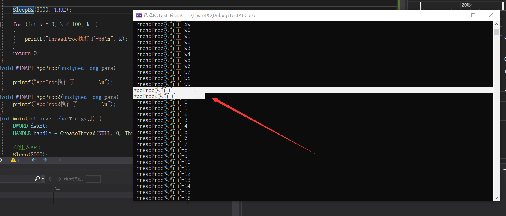
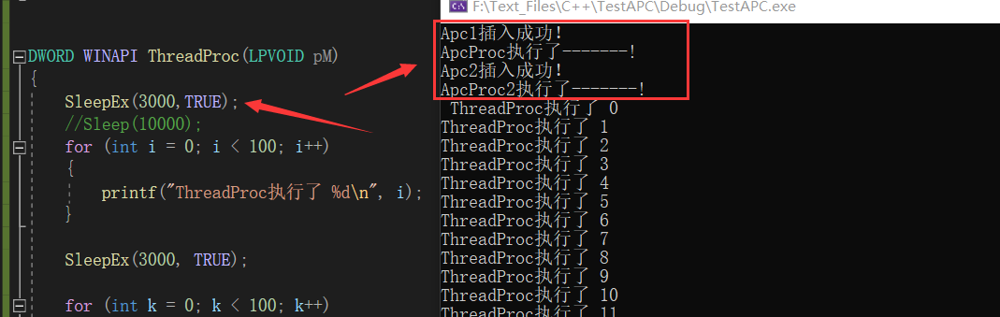

# 楔子
无论是正常状态还是挂靠状态，都有两个 APC 队列，一个内核队列，一个用户队列。
每当要挂入一个 APC 函数时，不管是内核 APC 还是用户 APC，内核都要准备一个 KAPC 的数据结构，并且将这个 KAPC 结构挂到相应的 APC 队列中。
# KAPC 结构
kd> dt _KAPC
nt!_KAPC
+0x000 Type //类型 APC类型为0x12
+0x002 Size //本结构体的大小 0x30
+0x004 Spare0 //未使用
+0x008 Thread //目标线程
+0x00c ApcListEntry //APC队列挂的位置
+0x014 KernelRoutine //指向一个函数(释放APC)
+0x018 RundownRoutine //略
+0x01c NormalRoutine //用户APC总入口 或者 真正的内核apc函数
+0x020 NormalContext //内核APC：NULL 用户APC：真正的APC函数
+0x024 SystemArgument1 //APC函数的参数
+0x028 SystemArgument2 //APC函数的参数
+0x02c ApcStateIndex //挂哪个队列，有四个值：0 1 2 3
+0x02d ApcMode //内核APC 用户APC
+0x02e Inserted //表示本apc是否已挂入队列 挂入前：0 挂入后 1
# ApcStateIndex
与 KTHREAD (+0x165) 的属性同名，但含义不一样：
ApcStateIndex 有四个值：
0 原始环境 1 挂靠环境 2 当前环境 3 插入 APC 时的当前环境
正常情况下：
ApcStatePointer [0] 指向 ApcState
ApcStatePointer [1] 指向 SavedApcState
挂靠情况下：
ApcStatePointer [0] 指向 SavedApcState
ApcStatePointer [1] 指向 ApcState
2 初始化的时候，当前线程的 ApcState，不管挂靠还是没挂靠，我只选当前的 APC 状态。 判断是否为 2 的状态可以在 KeInitializeApc 中观察到。
3 插入的时候，当前线程的 ApcState，如果在初始化的时候还没有挂靠，在准备插入的时候线程挂靠了，如果值为 3 就会使 KAPC 中的 ApcStateIndex 与 KTHREAD 中的 ApcStateIndex 一样。 判断是否为 3 的状态可以在 KiInsertQueueApc 中观察到。
# Alertable 属性说明 (是否运行被 APC 吵醒)
结合 KiInsertQueueApc 函数
kd> dt _KTHREAD
ntdll!_KTHREAD
...
+0x164 Alertable : UChar
...
DWORD SleepEx(
DWORD dwMilliseconds, // time-out interval
BOOL bAlertable // early completion option
);
DWORD WaitForSingleObjectEx(
HANDLE hHandle, // handle to object
DWORD dwMilliseconds, // time-out interval
BOOL bAlertable // alertable option
);
总结:
1、 Alertable=0 当前插入的 APC 函数未必有机会执行： UserApcPending = 0
2、 Alertable=1 UserApcPending = 1 将目标线程唤醒 (从等待链表中摘出来，并挂到调度链表)
# 挂入流程
从 R3 到 R0 的调用流程
用户层调用：QueueUserAPC (kernel32.dll) -> NtQueueApcThread (ntkrnlpa.exe) -> 内核层调用 KeInitializeApc (分配空间 初始化 KAPC 结构体) -> KeInsertQueueApc -> KiInsertQueueApc (将 KAPC 插入指定 APC 队列)
# 各层函数分析
分析一下各层的函数的都做了什么事情。
# QueueUserAPC(kernel32.dll)
首先了解一下这个函数
WINBASEAPI | |
DWORD | |
WINAPI | |
QueueUserAPC( | |
PAPCFUNC pfnAPC, | |
HANDLE hThread, | |
ULONG_PTR dwData | |
) | |
/*++ | |
Routine Description: | |
这个函数用于将用户模式的 APC 队列到指定的线程。当指定的线程执行 alertable 等待时，APC 将被触发。 | |
Arguments: | |
pfnAPC - 提供 APC 例程的地址，以便在 APC 触发时执行。 | |
hHandle - 为线程对象提供一个句柄。调用者必须具有对该线程的线程设置上下文访问权限。 | |
dwData - 提供一个 DWORD 传递给 APC | |
Return Value: | |
TRUE - The operations was successful | |
FALSE - The operation failed. GetLastError () is not defined. | |
--*/ | |
{ | |
NTSTATUS Status; | |
PVOID Argument1 = (PVOID) pfnAPC; | |
PVOID Argument2 = (PVOID) dwData; | |
PVOID Argument3 = NULL; | |
ACTIVATION_CONTEXT_BASIC_INFORMATION acbi = { 0 }; | |
Status = | |
RtlQueryInformationActivationContext( | |
RTL_QUERY_INFORMATION_ACTIVATION_CONTEXT_FLAG_USE_ACTIVE_ACTIVATION_CONTEXT, | |
NULL, | |
0, | |
ActivationContextBasicInformation, | |
&acbi, | |
sizeof(acbi), | |
NULL); | |
if (!NT_SUCCESS(Status)) { | |
DbgPrint("SXS: %s failing because RtlQueryInformationActivationContext() returned status %08lx\n", __FUNCTION__, Status); | |
return FALSE; | |
} | |
Argument3 = acbi.ActivationContext; | |
if (acbi.Flags & ACTIVATION_CONTEXT_FLAG_NO_INHERIT) { | |
// We're not supposed to propogate the activation context; set it to a value to indicate such. | |
Argument3 = INVALID_ACTIVATION_CONTEXT; | |
} | |
Status = NtQueueApcThread( | |
hThread, | |
&BaseDispatchAPC, | |
Argument1, | |
Argument2, | |
Argument3 | |
); | |
if ( !NT_SUCCESS(Status) ) { | |
return 0; | |
} | |
return 1; | |
} |
其中的 RtlQueryInformationActivationContext 函数也不知道有什么用，暂时不管，我们先分析主线，此函数又调用了 NtQueueApcThread 了
# NtQueueApcThread(ntkrnlpa.exe)
在 Ntdll 中也有一个同名的函数，会通过快速调用，调用 ntkrnlpa 中的这个函数。这里就直接介绍这个函数了。
NTSYSAPI | |
NTSTATUS | |
NTAPI | |
NtQueueApcThread( | |
IN HANDLE ThreadHandle, | |
IN PPS_APC_ROUTINE ApcRoutine, | |
IN PVOID ApcArgument1, | |
IN PVOID ApcArgument2, | |
IN PVOID ApcArgument3 | |
) | |
/*++ | |
Routine Description: | |
This function is used to queue a user-mode APC to the specified thread. The APC | |
will fire when the specified thread does an alertable wait | |
Arguments: | |
ThreadHandle - Supplies a handle to a thread object. The caller | |
must have THREAD_SET_CONTEXT access to the thread. | |
ApcRoutine - Supplies the address of the APC routine to execute when the | |
APC fires. | |
ApcArgument1 - Supplies the first PVOID passed to the APC | |
ApcArgument2 - Supplies the second PVOID passed to the APC | |
ApcArgument3 - Supplies the third PVOID passed to the APC | |
Return Value: | |
Returns an NT Status code indicating success or failure of the API | |
--*/ | |
{ | |
PETHREAD Thread; | |
NTSTATUS st; | |
KPROCESSOR_MODE Mode; | |
PKAPC Apc; | |
PAGED_CODE(); | |
Mode = KeGetPreviousMode (); | |
st = ObReferenceObjectByHandle (ThreadHandle, | |
THREAD_SET_CONTEXT, | |
PsThreadType, | |
Mode, | |
&Thread, | |
NULL); | |
if (NT_SUCCESS (st)) { | |
st = STATUS_SUCCESS; | |
if (IS_SYSTEM_THREAD (Thread)) { | |
st = STATUS_INVALID_HANDLE; | |
} else { | |
Apc = ExAllocatePoolWithQuotaTag (NonPagedPool | POOL_QUOTA_FAIL_INSTEAD_OF_RAISE, | |
sizeof(*Apc), | |
'pasP'); | |
if (Apc == NULL) { | |
st = STATUS_NO_MEMORY; | |
} else { | |
KeInitializeApc (Apc, | |
&Thread->Tcb, | |
OriginalApcEnvironment, | |
PspQueueApcSpecialApc, | |
NULL, | |
(PKNORMAL_ROUTINE)ApcRoutine, | |
UserMode, | |
ApcArgument1); | |
if (!KeInsertQueueApc (Apc, ApcArgument2, ApcArgument3, 0)) { | |
ExFreePool (Apc); | |
st = STATUS_UNSUCCESSFUL; | |
} | |
} | |
} | |
ObDereferenceObject (Thread); | |
} | |
return st; | |
} |
可以观察到，先申请了一块 KAPC 大小的内存，然后调用 KeInitializeApc 给 KAPC 初始化 ，初始化完成后，调用了 KeInsertQueueApc 插入了。
注意这里有个细节：
验证了是否是系统进程，这是一个宏定义： #define IS_SYSTEM_THREAD(Thread) (((Thread)->CrossThreadFlags&PS_CROSS_THREAD_FLAGS_SYSTEM) != 0) 利用这个特点，如果想要防止用户 APC 注入，可以更改线程标志。
# KeInitializeApc (初始化 KAPC 结构体)
VOID KeInitializeApc | |
( | |
IN PKAPC Apc,//KAPC 指针 | |
IN PKTHREAD Thread,// 目标线程 | |
IN KAPC_ENVIRONMENT TargetEnvironment,//0 1 2 3 四种状态 | |
IN PKKERNEL_ROUTINE KernelRoutine,// 销毁 KAPC 的函数地址 | |
IN PKRUNDOWN_ROUTINE RundownRoutine OPTIONAL, | |
IN PKNORMAL_ROUTINE NormalRoutine,// 用户 APC 总入口或者内核 apc 函数 | |
IN KPROCESSOR_MODE Mode,// 要插入用户 apc 队列还是内核 apc 队列 | |
IN PVOID NormalContext// 内核 APC：NULL 用户 APC：真正的 APC 函数 | |
) | |
/*++ | |
Routine Description: | |
这个函数初始化一个内核 APC 对象。 线程、内核例程和可选的常规例程、处理器模式和常规上下文参数都存储在 APC 对象中。 | |
Arguments: | |
Apc - 提供一个指向 APC 类型控制对象的指针。 | |
Thread - 提供一个指向线程类型的调度程序对象的指针。 | |
Environment - 有效值为：OriginalApcEnvironment、attacheapcenvironment、CurrentApcEnvironment 或 InsertApcEnvironment。枚举类型 0 1 2 3 | |
KernelRoutine - 提供一个指向在内核模式下 IRQL APC_LEVEL 执行的函数的指针。 | |
RundownRoutine - 提供一个可选的函数指针，当线程终止时，如果 APC 在线程的 APC 队列中，这个函数将被调用。 | |
NormalRoutine - 提供一个指向函数的可选指针，该函数将在 IRQL 0 中以指定的处理器模式执行。 如果没有指定这个参数，则忽略 ProcessorMode 和 NormalContext 参数。 | |
ApcMode - 提供处理器模式，在这种模式下，NormalRoutine 参数指定的函数将被执行。 | |
NormalContext - 提供指向任意数据结构的指针，该数据结构将被传递给 NormalRoutine 参数指定的函数。 | |
Return Value: | |
None. | |
--*/ | |
{ | |
ASSERT(Environment <= InsertApcEnvironment); | |
// | |
// Initialize standard control object header. | |
// | |
Apc->Type = ApcObject; | |
Apc->Size = sizeof(KAPC); | |
/* | |
初始化 APC 环境、线程地址、内核例程地址、运行例程地址、普通例程地址、处理器模式和正常上下文参数。 | |
如果正常的例程地址为 NULL，则处理器模式默认为 KernelMode，而 APC 是一个特殊的 APC。 | |
否则，将从参数列表中提取处理器模式。 | |
*/ | |
if (Environment == CurrentApcEnvironment) { | |
Apc->ApcStateIndex = Thread->ApcStateIndex; | |
} else { | |
ASSERT((Environment <= Thread->ApcStateIndex) || (Environment == InsertApcEnvironment)); | |
Apc->ApcStateIndex = (CCHAR)Environment; | |
} | |
Apc->Thread = Thread; | |
Apc->KernelRoutine = KernelRoutine; | |
Apc->RundownRoutine = RundownRoutine; | |
Apc->NormalRoutine = NormalRoutine; | |
if (ARGUMENT_PRESENT(NormalRoutine)) { | |
Apc->ApcMode = ApcMode; | |
Apc->NormalContext = NormalContext; | |
} else { | |
Apc->ApcMode = KernelMode; | |
Apc->NormalContext = NIL; | |
} | |
Apc->Inserted = FALSE; | |
return; | |
} |
# KeInsertQueueApc
BOOLEAN | |
KeInsertQueueApc ( | |
IN PRKAPC Apc, | |
IN PVOID SystemArgument1, | |
IN PVOID SystemArgument2, | |
IN KPRIORITY Increment | |
) | |
/*++ | |
Routine Description: | |
这个函数将一个 APC 对象插入到 APC 队列中，该队列由 APC 对象的线程和处理器模式字段指定。 | |
如果 APC 对象已经在 APC 队列中或 APC 队列被禁用，则不执行任何操作。 | |
否则，APC 对象被插入到指定的队列中，并做出适当的调度决策。 | |
Arguments: | |
Apc - 提供一个指向 APC 类型控制对象的指针。 | |
SystemArgument1, SystemArgument2 - 提供一组包含执行程序提供的非类型化数据的两个参数。 | |
Increment - 提供优先级增量，如果排队的 APC 导致一个线程等待满足。 | |
Return Value: | |
如果 APC 对象已经在 APC 队列中，或者禁用 APC 队列，则返回 false 值。否则，将返回一个 TRUE 的值。 | |
--*/ | |
{ | |
BOOLEAN Inserted; | |
KLOCK_QUEUE_HANDLE LockHandle; | |
KIRQL OldIrql; | |
PRKTHREAD Thread; | |
ASSERT_APC(Apc); | |
ASSERT(KeGetCurrentIrql() <= DISPATCH_LEVEL); | |
// 将 IROL 提升到 SYNCH_LEVEL _ level，获取线程 APC 队列锁，并锁定调度程序数据库。 | |
Thread = Apc->Thread; | |
KeAcquireInStackQueuedSpinLockRaiseToSynch(&Thread->ApcQueueLock, &LockHandle); | |
KiLockDispatcherDatabaseAtSynchLevel(); | |
// 如果 Apc 队列被禁用，则将 inserted 设置为 FALSE。否则，将系统参数值保存在 APC 对象中，并尝试对 APC 进行排队。 | |
if (Thread->ApcQueueable == FALSE) { | |
Inserted = FALSE; | |
} else { | |
Apc->SystemArgument1 = SystemArgument1; | |
Apc->SystemArgument2 = SystemArgument2; | |
Inserted = KiInsertQueueApc(Apc, Increment); | |
} | |
// 从同步级别解锁调度程序数据库，将线程 APC 队列锁和较低的 IRQL 解锁到其先前的值，并返回是否插入了 APC。 | |
KiUnlockDispatcherDatabaseFromSynchLevel(); | |
KeReleaseInStackQueuedSpinLock(&LockHandle); | |
return Inserted; | |
} |
此函数又调用 KiInsertQueueApc 函数
# KiInsertQueueApc
KiInsertQueueApc 说明：
根据 KAPC 结构中的 ApcStateIndex 找到对应的 APC 队列
再根据 KAPC 结构中的 ApcMode 确定是用户队列还是内核队列
将 KAPC 挂到对应的队列中 (挂到 KAPC 的 ApcListEntry 处)
再根据 KAPC 结构中的 Inserted 置 1，标识当前的 KAPC 为已插入状态
修改 KAPC_STATE 结构中的 KernelApcPending/UserApcPending
BOOLEAN | |
FASTCALL | |
KiInsertQueueApc ( | |
IN PKAPC Apc, | |
IN KPRIORITY Increment | |
) | |
/*++ | |
Routine Description: | |
此函数将 APC 对象插入到线程的 APC 队列中。 | |
线程对象的地址、APC 队列和 APC 的类型都是从 APC 对象派生出来的。 | |
如果 APC 对象已经在 APC 队列中，则不执行操作并返回函数值 False。 | |
如果将 APC 插入到指定的 APC 队列中，则将其插入状态设置为 true，并返回函数值 true。 | |
N.B. 在调用此例程时，必须保持线程 APC 队列锁和调度程序数据库锁定。 | |
Arguments: | |
Apc - Supplies a pointer to a control object of type APC. | |
Increment - Supplies the priority increment that is to be applied if | |
queuing the APC causes a thread wait to be satisfied. | |
Return Value: | |
If the APC object is already in an APC queue, then a value of FALSE is | |
returned. Else a value of TRUE is returned. | |
--*/ | |
{ | |
KPROCESSOR_MODE ApcMode; | |
PKAPC ApcEntry; | |
PKAPC_STATE ApcState; | |
BOOLEAN Inserted; | |
PLIST_ENTRY ListEntry; | |
PKTHREAD Thread; | |
// 如果 APC 对象已经在 APC 队列中，则将插入设置为 FALSE。 | |
// 否则将 APC 对象插入到适当的队列中，将 APC 插入状态设置为 TRUE，检查 APC 是否应该立即交付，并将插入状态设置为 TRUE。 | |
// | |
// For multiprocessor performance, the following code utilizes the fact | |
// that kernel APC disable count is incremented before checking whether | |
// the kernel APC queue is nonempty. | |
// | |
// See KeLeaveCriticalRegion(). | |
// | |
Thread = Apc->Thread; | |
if (Apc->Inserted) { | |
Inserted = FALSE; | |
} else { | |
if (Apc->ApcStateIndex == InsertApcEnvironment) { | |
Apc->ApcStateIndex = Thread->ApcStateIndex; | |
} | |
ApcState = Thread->ApcStatePointer[Apc->ApcStateIndex]; | |
// 如果 NormalRoutine 值为 NULL，【则在处理器模式选择的所有其他特殊 APC 项之后插入 APC】。 | |
// 否则，将 APC 对象插入处理器模式选择的 APC 队列的尾部，除非 APC 模式是用户模式， | |
// 特殊的 APC 例程的地址是退出线程，在这种情况下，将 APC 插入到列表的前面，并设置用户 APC 挂起。 | |
ApcMode = Apc->ApcMode; | |
if (Apc->NormalRoutine != NULL) { | |
if ((ApcMode != KernelMode) && (Apc->KernelRoutine == PsExitSpecialApc)) { | |
Thread->ApcState.UserApcPending = TRUE; | |
InsertHeadList(&ApcState->ApcListHead[ApcMode], | |
&Apc->ApcListEntry); | |
} else { | |
// 内核模式 | |
InsertTailList(&ApcState->ApcListHead[ApcMode], | |
&Apc->ApcListEntry); | |
} | |
} else { | |
ListEntry = ApcState->ApcListHead[ApcMode].Blink; | |
while (ListEntry != &ApcState->ApcListHead[ApcMode]) { | |
ApcEntry = CONTAINING_RECORD(ListEntry, KAPC, ApcListEntry); | |
if (ApcEntry->NormalRoutine == NULL) { | |
break; | |
} | |
ListEntry = ListEntry->Blink; | |
} | |
InsertHeadList(ListEntry, &Apc->ApcListEntry); | |
} | |
Apc->Inserted = TRUE; | |
// 如果 APC 对象的 APC 索引与线程的 APC 索引相匹配，那么检查 APC 是否应该中断线程执行，或者让线程进入等待状态。 | |
if (Apc->ApcStateIndex == Thread->ApcStateIndex) { | |
// 如果 APC 的处理器模式是内核模式，那么检查 APC 是否应该中断线程或使线程脱离等待状态。 | |
// 否则检查 APC 是否应该对线程进行排序，使其脱离可提醒的等待状态。 | |
if (ApcMode == KernelMode) { | |
Thread->ApcState.KernelApcPending = TRUE; | |
if (Thread->State == Running) { | |
// 这个函数会获取 APC_LEVEL 等级的 IRQL | |
KiRequestApcInterrupt(Thread->NextProcessor); | |
} else if ((Thread->State == Waiting) && | |
(Thread->WaitIrql == 0) && | |
((Apc->NormalRoutine == NULL) || | |
((Thread->KernelApcDisable == 0) && | |
(Thread->ApcState.KernelApcInProgress == FALSE)))) { | |
// 唤醒线程 使其从等待队列中移除 | |
KiUnwaitThread(Thread, STATUS_KERNEL_APC, Increment, NULL); | |
} | |
// 如果不是内核模式那么 | |
} else if ((Thread->State == Waiting) && | |
(Thread->WaitMode == UserMode) && | |
(Thread->Alertable || Thread->ApcState.UserApcPending)) { | |
Thread->ApcState.UserApcPending = TRUE; | |
KiUnwaitThread(Thread, STATUS_USER_APC, Increment, NULL); | |
} | |
} | |
Inserted = TRUE; | |
} | |
// 返回 APC 对象是否插入到 APC 队列中。 | |
return Inserted; | |
} |
# 作业
创建一个进程，使用 Sleep () 函数让其处于等待状态，然后向其 APC 队列插入 APC, 观蔡是否执行。
如何让上题中的 APC 函数执行？
代码：
#define _WIN32_WINNT 0x0400 | |
#include<windows.h> | |
#include<stdio.h> | |
DWORD WINAPI ThreadProc(LPVOID pM) | |
{ | |
//SleepEx(3000,TRUE); | |
Sleep(10000); | |
for (int i = 0; i < 100; i++) | |
{ | |
printf("ThreadProc执行了 %d\n", i); | |
} | |
SleepEx(3000, TRUE); | |
for (int k = 0; k < 100; k++) | |
{ | |
printf("ThreadProc执行了-%d\n", k); | |
} | |
return 0; | |
} | |
void WINAPI ApcProc(unsigned long para) { | |
printf("ApcProc执行了-------!\n"); | |
} | |
void WINAPI ApcProc2(unsigned long para) { | |
printf("ApcProc2执行了-------!\n"); | |
} | |
int main(int argc, char* argv[]) { | |
DWORD dwRet; | |
HANDLE handle = CreateThread(NULL, 0, ThreadProc, NULL, 0, NULL); | |
// 注入 APC | |
Sleep(3000); | |
dwRet = QueueUserAPC(ApcProc, handle, NULL); | |
if (dwRet) | |
{ | |
printf("Apc1插入成功！\n"); | |
dwRet = QueueUserAPC(ApcProc2, handle, NULL); | |
if (dwRet) | |
{ | |
printf("Apc2插入成功！\n"); | |
} | |
} | |
getchar(); | |
} |
当 APC 被唤醒的时候两个 APC 一起执行了。

设置为可被唤醒状态时
